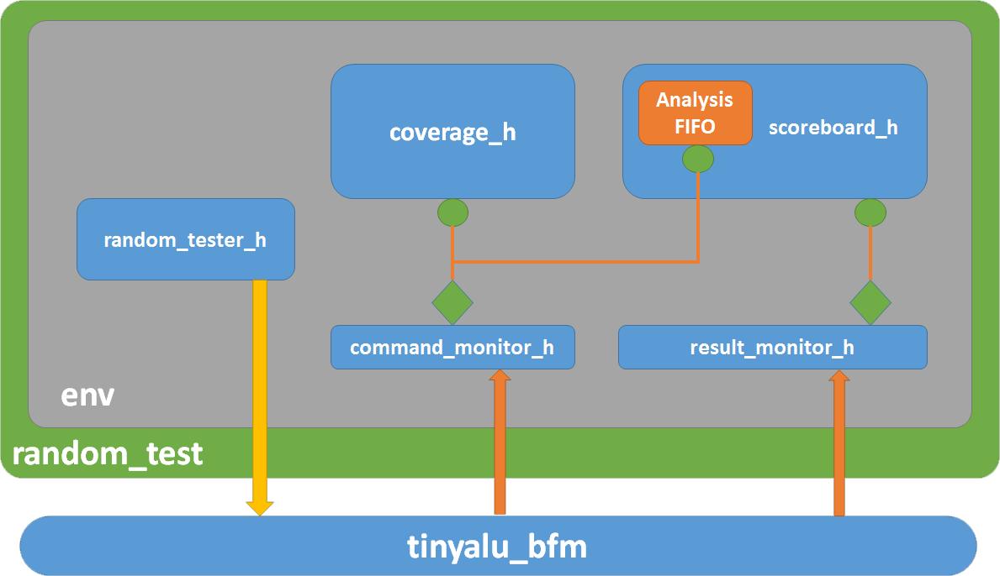

Verify This!
UVM Introduction
Based on Verification Academy
Agenda
Day 1
- Tendencias
- Introducción
- ALU Specs
- TestBench Convencional
- SV Interfaces & BFM
- Classes y Extensiones
- Polimorfismo
Tendencias
ASIC: Tendencias de Diseño
Tendencias
ASIC: Verificación cada vez más necesaria
Tendencias
ASIC: Verificación cada vez más necesaria
Tendencias
ASIC: Técnicas de Verificación
Tendencias
ASIC: Lenguajes
Tendencias
ASIC: Verificación
SystemVerilog es el COBOL de la electronica???
| Lenguaje | Reserved Keywords |
|---|---|
| ANSI COBOL 85 | 357 |
| SystemVerilog | 323 |
| VHDL 2008 | 115 |
| Verilog 95 | 102 |
| C# | 102 |
| C++ | 82 |
| Python3.x | 33 |
"* No academic computer scientists participated in the design of COBOL;
all of those on the committee came from commerce or government" Parecido no?
Introduccion
Quien carajo es iUVieM????
- Universal Verification Methodology
- Esfuerzo llevado a cabo por Accellera
- Define una metodología de verificación standard y una librería de clases
- Inspirada en VMM y OVM y en otras buenas prácticas
- Open Source y codeada integramente en SystemVerilog
- IEEE Standard P1800.2 (UVM 1.2)
- Su objetivo siniestro, es la eficiencia y la reutilización de piezas de software
- Creado por y para la industria.
Introduccion
UVM Origins
Introduccion
SystemVerilog Typical TB
Introduccion
UVM Typical TB
Introduccion
UVM Clases

Introduccion
Run More Tests, Write Less Code
- Environment y Component classes rara vez cambian
- Enviar transactions lo mas rapido posibles
- Permite que los tests existentes no se rompan
- Hooks para que los tests puedan inyectar nuevos comportamientos: virtual methods, factories, callbacks
- Los tests extienden las clases de testbench
- Agregar constraints para alcanzar casos corners
- Override de clases para agregar nuevas funcionabilidades
- Injectar errores, delays con callbacks
- Se puede correr cada test con cientos de semillas
1. ALU Specs
- start debe permanecer en 1 y los operadores estables hasta
que termina la operacion - done se levanta cuando termina la operacion
1. ALU Specs
| Operation | Opcode |
|---|---|
| no_op | 3'b000 |
| add_op | 3'b00 |
| and_op | 3'b010 |
| xor_op | 3'b011 |
| mul_op | 3'b100 |
| unused | 3'b101-3'b111 |
1. VHDL ALU Implementation
Single Cycle: Add - AND - XOR
code/tinyalu_dut/single_cycle_add_and_xor.vhd
1. VHDL ALU Implementation
Multi Cycle: Multiplicacion
code/tinyalu_dut/three_cycle_mult.vhd
1. VHDL ALU Implementation
Top Level
code/tinyalu_dut/tinyalu.vhd
2. TestBench Convencional
Coverage First Methodology
- Definimos que queremos cubrir y luego creamos el TB
- El objetivo es testear toda la funcionabilidad de la ALU y
simular TODAS las lineas del codigo RTL - El TB tiene 3 partes: stimulus, self-checking y coverage
2. TestBench Convencional
- Testear todas las operaciones
- Casos Border: entradas todas en 0/1 para todas las operaciones
- Ejecutar todas las ops luego de un reset
- Ejecutar una multiplicacion luego de una single cycle op y viceversa
- Simular todas las operaciones ejecutadas 2 veces seguidas
code/ch02/tinyalu_tb.sv
3. SV Interfaces & BFM
- El primer paso hacia UVM es modularizar correctamente el TB
- SV interface agrupa signals y permite modelar Bus Functional Models
- Los BFM encapsulan el protocolo asociado a un bus en simples transactions
code/ch03/tinyalu_bfm.sv
3. SV Interfaces & BFM
Modular TB
- Dividimos el TB en tester, scoreboard y coverage
- La conexion la realizamos mediante nuestra nueva BFM
code/ch03/top.sv
3. SV Interfaces & BFM
Scoreboard
code/ch03/scoreboard.sv
3. SV Interfaces & BFM
Tester
code/ch03/tester.sv
4.5. Classes y Extensions
Por que es tan sexy OOP?
- Code Reuse & Code Maintainability & Memory Management:
code/ch05/classes.sv
6. Polimorfismo
Que carajo es????
Declaro una variable de tipo rectangulo y luego instancio un objeto cuadrado.
Siendo cuadrado una clase extendida de rectangulo....
Puedo guardar el objeto cuadrado en la variable rectangulo?????
Obvio papito! Se llama Polimorfimo
6. Polimorfismo: Ejemplo basico

code/ch06/01_Not_Virtual/not_virtual.sv
6. Polimorfismo: Virtual Methods
- SV usa la keyword virtual por todos lados.
- La idea de virtual, es avisar que lo vamos a definir despues
- Cuando definimos un metodo como virtual, le estamos diciendo a SV que se fije en que tipo de objeto tiene, no en el tipo de la variable
code/ch06/02_Virtual/virtual.sv
6. Polimorfismo: Abstracts Classes and Pure Virtual Methods
- La version anterior es re malaria. Estamos obligando a tener que hacer un override de make_sound() en las clases extendidas. Sino $fatal
- Lo malo de esto, es que va a compilar, a correr y en el medio de la simulacion, te puede explotar... Seamos serios
- SV permite definir abstract class, que solo pueden ser usadas como clases bases. No se pueden instanciar
- Estas clases permiten definir pure virtual methods
- Estos metodos son vacios y deben ser redefinimos cuando extendemos la clase abstracta
- Si no redefinimos un metodo pure virtual, obtenemos error de compilacion
6. Polimorfismo: Abstracts Classes and Pure Virtual Methods
code/ch06/03_Pure_Virtual/pure_virtual.sv
Agenda
Day 2
- Static Methods and Variables
- Clases parametricas
- The Factory Pattern
- Object Oriented TestBench
7. Variables estaticas
- Muchas veces es util tener una estructura de datos global dentro de un TB
- OK, uso Variables globales? Son dificiles de debuggear, de encontrar la declaracion... Una tragedia
- OOP provee para este tipo de casos la magia de lo static
code/ch07/01_Static_Variables/static_variables.sv
7. Variables estaticas
- Solo tenemos una copia en memoria de una variable static
- Sin importar el numero de instancias que tengamos de esa clase
code/ch07/01_Static_Variables/ejemplo2.sv
Y el encapsulamiento que onda???
7. Metodos estaticos
- En los ejemplos anteriores, no escondiamos la implementacion. Si en el 1ero, queriamos cambiar la queue por otra estructura, debiamos cambiar por todos lados
- Siempre hay que encapsular estas cosas. Declarar protected la variable estatica y armar los metodos de acceso estaticos
code/ch07/02_Static_Methods/static_methods.sv
8. Clases Parametricas
- En la version anterior, creamos una lion_cage, ok, pero si ahora necesito una chicken_cage??? Copio y pego? NO!
- SV incorpora las parameterized class definitions
- Son una extension de los famosos parameters de verilog
- UVM las utiliza mucho, por eso hay que entenderlas
code/ch08/01_memory_example/pres-ch8.sv
8. Clases Parametricas
- Version con clases estaticas
- La queue es estatica, pero al instanciar 2 veces la clase con parametros distintos, SV crea 2 colas distintas
code/ch08/02_static/cages.sv
8. Variables con Parametros
- En esta version no usamos metodos estaticos, sino que instanciamos animal_cage y usamos ese objeto para almacenar otros objetos
- Funciona igual que el codigo anterior, pero no podemos acceder al animal_cage desde cualquier lugar del TB
code/ch08/03_instantiated/cages.sv
9. The Factory Pattern
- Design Pattern mas visible en UVM (Programming Trick)
- Consiste en crear una clase constructora dedicada a la construcción de objetos de un subtipo
- Veamos primero que soluciona:
code/ch09/without-factory.sv
La idea es crear datos de tipos aleatorios sin cambiar el codigo.
9. The Factory Pattern

- Factory Pattern: Queremos pasar un argumento a un metodo y que nos devuelva un objeto del tipo especificado
- Polimorfismo: Lion y chicken hacen un override de la clase animal. En una variable animal podemos guardar cualquiera de estos tipos
9. The Factory Pattern
- Vimos que virtual le decia que use el metodo del objeto y no del tipo del handler, pero que pasa si la clase heredada agrega cosas?
- $cast: system call que convierte la variable del segundo argumento en la clase del primer argumento
- Solo funciona si la clase objetivo es derivada de la clase casteada
code/ch09/factory.sv
9. The Factory Pattern
Python Lunes Style
code/ch09/factory.py
10. An Object-Oriented Testbench
- Por que tanta lio si los unitarios de verilog funcionan? Funcionan para cosas chicas, cosas complejas te vuelve loco, terminas a los gritos
- OOP encapsula y abstrae, por lo tanto permite manejar complejidades superiores y refuerza la reutilizacion de codigo
TinyALU TB en objetos:
- top: Instancia la clase testbench
- testbench: Top-Level Class
- tester: Genera los estimulos
- scoreboard: Chequea que la TinyAlu esta funcionando
- coverage: Captura la informacion de cobertura funcional
10. An Object-Oriented Testbench
Top Module
- Importamos las definiciones de clases (package)
- Instancia la DUT y el BFM y declara la clase testbench
- Instancia y ejecuta la clase testbench
code/ch10/top.sv
10. An Object-Oriented Testbench
Testbench Class
- Los TB orientados a objetos tienen un unico objeto que instancias los demas objetos, los conecta y lanza sus metodos
- Luego veremos que UVM maneja muchas de estas funciones por nosotros, pero como por ahora no estamos usando UVM, tenemos que hacer esto nosotros
code/ch10/tb_classes/testbench.svh
10. An Object-Oriented Testbench
Tester Class
- Estimula el DUT con Random Ops que eventualmente van a cubrir todos los coverpoints funcionales
- Muy similar a la version modular salvo que:
- Definimos una clase en vez de un modulo, usamos una variable para acceder a la BFM (en vez de un port list)
- Usamos el metodo execute en vez de un initial block
code/ch10/tb_classes/tester.svh
10. An Object-Oriented Testbench
ScoreBoard Class
code/ch10/tb_classes/scoreboard.svh
10. An Object-Oriented Testbench
Coverage Class
code/ch10/tb_classes/coverage.svh
Agenda
Day 3
- UVM Tests
- UVM Components
- UVM Environment
- New Paradigm
11. UVM Tests
- Objetivo: Necesitamos correr miles de tests sin tener que recompilar el TB para cada caso. Supongamos que tenemos 1000 tests y peron tarda 5 minutos por test en compilar todo. Eso significa 5000 minutos o 3.5 dias de compilacion. Drama
- UVM permite armar un TB dinamicamente configurable.
- Esto es, crear un TB definiendo las clases de objetos y luego instanciar distintos objetos para tests diferentes. Sin tener que recompilar
- El TB del tinyALU como esta hasta ahora, es enteramente hardcodeado, si queremos nuevos estimulos, tenemos que recompilar todo
[leat@solchaga uvm-training]$ vsim testbench -coverage +UVM_TESTNAME=addtest (o randomtest)
El objetivo es pasarle al TB previamente compilado los test que queremos correr
Definimos la clase addtest y UVM usa el argumento UVM_TESTNAME para llamar al factory y crear el test
11. UVM Tests
Lanzando simulaciones con UVM
- uvm_config_db: Clase estatica y parametrizable que permite almacenar info global en el TB
code/ch11/top.sv
11. UVM Tests
Definiendo y Registrando un Test UVM
- El test extiende uvm_test y lo registro con `uvm_component_utils
- Constructor con ciertas reglas
- Override del run_phase method
- Mecanismo de objections
code/ch11/tb_classes/random_test.svh
11. UVM Tests
Definiendo y Registrando otro Test UVM
- Ahora creamos el test add_test, de manera similar
code/ch11/tb_classes/add_test.svh
11. UVM Tests
run.do y ejemplo de salida
code/ch11/run.do
code/ch11/output.questa
12. UVM Components
- El diseño de un testbench se puede partir en 3:
- Estructura: Describe las partes del TB y como se conectan
- Secuencias: Comandos que le mandamos al DUT y en que orden
- Data: Datos de estimulo que usamos en los comandos
- UVM describe un TB utilizando una jerarquia de objetos
- Nos da herramientas para instanciar, ejecutar y terminar todos los objetos de nuestro TB
- La clase uvm_component es la base para armar la estructura del TB. Ejemplo: uvm_test que usamos previamente es un uvm_component
12. UVM Components
Definir e Instanciar UVM components
-
- Extender la clase uvm_component o clases hijas para definir nuestro componente
- Utilizar la macro `uvm_component_utils() para registrar la clase en la factory
- Proporcionar al menos el constructor minimo de uvm_component
- Override los UVM phase methods (de ser necesario)
- Antes, extendimos uvm_test e instanciamos las 3 partes del TB como objetos genericos
- Ahora vamos a tratar al tester, coverage y scoreboard como uvm_components utilizando las practicas standard de UVM
12. UVM Components
Intro UVM phases
- Todos los uvm components tienen estos phase methods por herencia
- UVM crea los TB y va llamando estos metodos en orden
- Cuando hacemos un override de estos metodos, en el constructor debemos llamar a super.(phase_method) primero
- function void build_phase(uvm_phase phase): UVM crea el TB (top-down). Los componentes UVM se instancian en este metodo. Si tratas de instanciarlos en otro lado es error
- function void connect_phase(uvm_phase phase): Conexion de componentes
- function void end_of_elaboration_phase(uvm_phase phase): UVM lo llama una vez que creo y conecto todos los componentes
- task run_phase(uvm_phase phase): UVM ejecuta esta task en su propio thread. Todos los run_phase se ejecutan simultaneamente
- function void report_phase(uvm_phase phase): Se ejecuta cuando se termina la ultima objection del test. Muestra Resultados
12. UVM Components
Scoreboard extends uvm_component
code/ch12/tb_classes/scoreboard.svh
12. UVM Components
Building the TB
code/ch12/tb_classes/random_test.svh
code/ch12/tb_classes/add_test.svh
13. UVM Environments
Resumen hasta la fecha...
- Vimos como la factory puede crear un objeto top del tipo uvm_test que se encarga de instanciar los uvm_components
- Sabemos que UVM llama automaticamente a los phase methods de nuestros componentes
- Ademas, UVM va a correr los run_phases de cada componente en su propio thread
- Hasta aca usamos uvm_test y uvm_components para crear un TB simple, donde instanciamos los componentes directamente en los tests
- Esta forma de crear el TB es sencilla de entender pero dificil de reutilizar
- La tipica discusion malaria: Intractable Vs Adaptable Coding
13. UVM Environments
Intractable Vs Adaptable
- Se llama intractable al codigo que escribis muy rapido sin pensar a futuro
- Se vuelven cada vez mas dificil de modificar y mantener
- Hay que escribir el codigo pensando que otra persona lo va a modificar y queremos que no nos putee (tanto)
- El codigo adaptable es facilmente reutilizable por otra persona
- Arrancamos codeando de mala gana el TB para nuestra ALU y lo estamos reformulando aplicando 3 reglas:
- Crear clases que hagan una unica cosa muy bien y juntarlas para crear una solucion
- Evitar el hardcodeo siempre que se pueda
- Programar en base a la interface y no hacer suposiciones sobre la implementacion
13. UVM Environments
Intractable Vs Adaptable
“Tienen prohibido escribir codigo de mierda.”
Guillermo Barros Schelotto
13. UVM Environments
Architecturing Adaptable Code

- Nuestro TB actualmente utiliza 2 tests: uno que manda operaciones random (random_tester) y otro puntual para la suma (add_tester)
- Random manda 1000 ops random y add manda 1000 sumas
- Ambos test mandan los operadores (A y B) mediante constrained random
- En nuestra solucion extendemos la clase uvm_component 2 veces, 1 vez por cada tester
- Cada clase tiene un metodo get_op(), un get_data() y un run_phase()
- Lo que lo hace una mala solucion, es que estamos duplicando run_phase()
13. UVM Environments
Architecturing Adaptable Code

- Creamos una clase abstracta (base_tester) que tenga el metodo run_phase() y que mande 1000 operaciones usando get_op() y get_data()
- Al ser abstracta no la podemos instanciar y con los metodos pure virtual obligamos a que las clases heredadas redefinan los metodos
- Todavia comparten codigo: ambos tester utilizan operadores random...
13. UVM Environments
Architecturing Adaptable Code

- random_test: crea operaciones random con operandos
aleatorios - Aprovechando esto es facil pensar que heredando la clase
random_tester se pueden crear muchas otras clases utiles - Por ejemplo: xor_test, mult_test, etc
- El resultado es que add_tester es muy simple:
code/ch13/tb_classes/add_tester.svh
13. UVM Environments
Separating Structure from Stimulus
- Muy lindo todo pero como lo usamos?
- Creamos una familia de clases uvm_test? No es una buena idea
- Cada test que extienda random_test va a tener un objeto random_tester...
code/ch12/tb_classes/random_test.svh - Le pifiamos cuando no cumplimos la promesa de que una clase solo haga 1 cosa muy bien, random_tester arma la estructura del TB y y especifica el test a realizar
- UVM soluciona esto mediante la clase uvm_env que es donde armamos la estructura del TB
- uvm_env usualmente solo contiene definiciones de los metodos build_phase y connect_phase
13. UVM Environments
Separating Structure from Stimulus

- Aca vemos el diagrama de clases luego de separar la estructura estructura respecto de los test mediante uvm_env
13. UVM Environments
env class
- La clase env define la estructura del TB. Instancia los objetos y luego los conecta
- OOP: Mientras mas dividamos a un problema en subproblemas mas chicos, obtendremos codigo mas simple
- El metodo build_phase() hace llamadas a metodos static que crean los componentes
code/ch13/tb_classes/env.svh
13. UVM Environments
Creando UVM components con UVM Factory
- UVM factory es mas sofisticada que el ejemplo simple que vimos de animales, donde teniamos que castear el resultado y hardcodear el codigo para agregar nuevos tipos a fabricar
- En UVM agregamos nuevas clases a la factory utilizando los siguientes macros:
- `uvm_component_utils()
- `uvm_object_utils()
- UVM Factory retorna un objeto del tipo correcto, sin necesidad de caster el resultado
- Veamos como hacemos esto...
13. UVM Environments
Creando UVM components con UVM Factory

- UVM utiliza la tecnica de static member/method que vimos previamente para entregar un uvm_component.
- Las ventajas son las siguientes:
- No hay que castear el resultado, UVM lo hace automaticamente
- En tiempo de compilacion podemos encontrar si no definimos la clase o la escribimos mal
- El compilador tambien ataja cuando olvidamos poner algun `uvm_component_utils()
13. UVM Environments
Creando UVM components con UVM Factory
- Todo muy lindo pero tester_h pide como resultado un objeto del tipo base_tester y esta es una clase abstracta....
code/ch13/tb_classes/base_class.svh
- Esto funciona porque env esta usando la variable base_tester como un placeholder
- El codigo asume que la factory va a retornar un objeto de alguna clase derivada de base_tester
- El objeto se determina mediante un override de la clase base_tester en la factory antes que build_phase se ejecute
- Aca, el override lo hacemos en la clase test que instancia la clase env
13. UVM Environments
Overriding the factory
- Cuando vimos UVM Test, extendimos a random_test para crear un add_test
- add_test reemplazaba al tester mediante un add_tester
- Creamos nuestro add_test copiando el random_test y reemplazando el objeto tester por un objeto add_tester. Violando la regla que dice que no vale copiar codigo
- UVM factory soluciona este problema
- Debido a que la clase add_tester es hija de la clase base_tester, podemos usar un objeto add_tester, en cualquier lugar que usemos un base_tester
- Es decir, le podemos decir a la factory que produzca un objeto add_tester en cualquier lugar que le pidamos un objeto base_tester
- A esto se lo llama, factory override
13. UVM Environments
Overriding the factory

- El metodo static set_type_override() le dice a la factory que cuando vea un pedido por una base_class_name retorne un objeto del tipo new_class_name
- Esta feature es la que nos permite separar la estructura del TB (uvm_env) del tipo de estimulo generado (uvm_test)
13. UVM Environments
Overriding the factory
code/ch13/tb_classes/random_test.svh
- Vemos que esta version es mas adaptable
- Todos los Tests hace un override de base_tester en funcion del tester que necesitan para sus estimulos
- La clase env crea el objeto y lo pone en ejecucion
- Ahora la clase test hace una cosa bien (generar estimulos) y la clase env hace otra cosa muy bien (crear la estructura)
14. A New Paradigm
- El paradigma estructural plantea que pasos/receta seguir para resolver un problema
- OOP plantea, como conectar objetos para poder resolver el problema
- Es por eso, que debemos analizar los tipos de comunicaciones que podemos tener entre objetos
- Single-Thread: Un objeto corriendo en un thread llama al metodo de otro objeto
- Dual_Thread: 2 objetos corriendo en threads diferentes necesitan comunicarse entre si y coordinarse
- Arrancaremos viendo single-thread y la fabulosa clase uvm_analysis_port
Agenda
Day 4
- Talking to Multiples Objects
- Using Analysis Ports in a TestBench
- Interthread Communication
- Put and Get Ports in Action
15. Talking Multiples Objects
Problema Introductorio
- Escribir un programa que simule la ejecucion de tirar dos dados (2d6) 20 veces e informe lo siguiente
- El promedio de los valores que dieron los dados
- Un histograma con la frecuencia de valores
- Un reporte de cobertura que muestre si salieron todos los posibles valores de 2 a 12
15. Talking Multiples Objects
Solucion Inicial
- Tenemos que Crear y conectar objetos que resuelvan el problema
- Crearemos 3 uvm_components
- La clase Average recolecta la data usando el metodo write() y luego informa el resultado utilizando report_phase()
code/ch15/01_No_Analysis_Port/average.svh
15. Talking Multiples Objects
Solucion Inicial
- Class Histogram
code/ch15/01_No_Analysis_Port/histogram.svh
15. Talking Multiples Objects
Solucion Inicial
- Class Coverage
code/ch15/01_No_Analysis_Port/coverage.svh
15. Talking Multiples Objects
Solucion Inicial
- Class Dice Roller
code/ch15/01_No_Analysis_Port/dice_roller.svh
15. Talking Multiples Objects
Solucion Inicial
- UVM Practice: Creamos una clase dice_test que extiende uvm_test
- Todo muy lindo, pero veamos en detalle run_phase
code/ch15/01_No_Analysis_Port/dice_test.svh
15. Talking Multiples Objects
Observer Design Pattern
- Funciona como Twitter: Cuando escribimos un tweet y lo enviamos, todos nuestros followers pueden leerlo
- Realmente no sabemos que van a hacer con ese tweet ni tampoco sabemos quienes son nuestros followers
- Asi funciona Observer Design Pattern: Un objeto crea un dato y lo comparte con el mundo, sin importar cuantos observadores tiene
- Como lo usamos aca: dice_roller_h crea el dato que otros objetos necesitan
- dice_roller_h es el objeto observado y coverage_h, histogram_h y average_h son los observadores (subscribers)
15. Talking Multiples Objects
Observer Design Pattern and UVM
- UVM provee 2 clases que permiten implementar facilmente este pattern:
- uvm_analysis_port: Envia data a un conjunto de subscribers (observadores)
- uvm_subscriber: Extension de uvm_component que permite al componente subscribirse a un uvm_analysis_port

15. Talking Multiples Objects
uvm_analysis_port
- Declaramos una variable del tipo uvm_analysis_port que defina el tipo de datos que va a transportar
- Instanciamos el analysis port en build_phase
- Escribimos datos en el puerto mediante el metodo .write()
- Una vez que escribimos datos en el puerto, este va a todos sus subscribers
- Utilizamos el metodo connect() para conectar los subscribers al puerto. Este metodo tiene un unico argumento: un analysis_port
code/ch15/02_With_Analysis_Port/ch15-analysis-port.sv
15. Talking Multiples Objects
uvm_subscriber
- Extendemos la clase uvm_subscriber parametricamente, para saber que tipo de datos va a leer
- La clase nos da un objeto llamado analysis_export
- La clase requiere que creemos un metodo llamado write() que tiene un unico argumento t, que es del mismo tipo que la extension de la clase
- En nuestro ejemplo, tenemos 3 subscribers (average, coverage y histogram)
code/ch15/02_With_Analysis_Port/coverage.svh
15. Talking Multiples Objects
Dice_Roller: usando uvm_analysis_port
- No usamos la Factory para instanciar ports
- Cuando llamamos al metodo write en el producer, el analysis_port llama al metodo write() de todos los subscribers y asi pasa los datos
- Esto es lo lindo, no hay que preocuparse sobre quien lee nuestros datos
code/ch15/02_With_Analysis_Port/dice_roller.svh
15. Talking Multiples Objects
Metodo connect_phase()
- Necesitamos vincular al productor con el consumidor
- UVM provee un phase method (connect_phase()) para conectar los objetos
- UVM llama al metodo build_phase de manera TOPDOWN, una vez terminado con todos los objetos en la jerarquia, UVM llama al metodo connect_phase de manera BottomUP
- El proceso de conexion tiene 2 partes fundamentales
- Los uvm_subscribers contienen un objeto llamado analysis_export, que no debemos instanciarlo ya que viene cuando extendemos la clase uvm_subscriber
- La clase uvm_analysis_port provee un metodo llamado connect()
15. Talking Multiples Objects
Metodo connect_phase()
- Veamos como hacemos que el subscriber sea follower del analysis_port
code/ch15/02_With_Analysis_Port/dice_test.svh
15. Talking Multiples Objects
Solucion Picante
- En el diagrama de conexionado podemos ver que la clase dice_roller tiene un objeto uvm_analysis_port llamado roll_app
- Cada subscriber tiene un objeto analysis_export
- La conexion entre ambos se realiza mediante el metodo connect()

16. Using Analysis Ports in a TB
Introduccion
- Una de las razones por la que la gente de UVM implemento el observer design patter es que es ideal para monitoriar un DUT
- Todos los TB hacen 2 cosas:
- Enviar estimulos al DUT
- Ver que pasa
- Actualmente nuestro TB hace eso con 1 objeto que envia estimulos (tester_h) y 2 que ven que pasa (scoreboard_h y coverage_h)
- Al tener 2 objetos que neceistan ver los comandos del TinyALU, estamos duplicando codigo, vamos a cambiar esto usando analysis_port
- En la jerga UVM, scoreboard_h y coverage_h forman parte del analysis layer, de ahi el nombre de analysis_port
16. Using Analysis Ports in a TB
Diagrama del Testbench
16. Using Analysis Ports in a TB
Object Handles in the BFM
- Ahora vamos a conectar la BFM al TB mediante el handler de un objeto
code/ch16/tinyalu_bfm.sv
- Estos handlers, los seteamos desde las clases de los monitores
code/ch16/tb_classes/command_monitor.svh
16. Using Analysis Ports in a TB
Monitoreando los comandos del TinyALU
- Dentro del BFM, monitoreamos los comandos y los resultados mediante 2 bloques always
code/ch16/tinyalu_bfm.sv
- Clase command_monitor:
code/ch16/tb_classes/command_monitor.svh
16. Using Analysis Ports in a TB
TinyALU Coverage Class como Subscriber
- Mediante la clase command_monitor tenemos centralizado donde buscar que comandos ejecuta TinyALU
- Los objetos que necesiten saber que cmd se ejecuta, se tienen que subscribir al analysis port de esta clase e implementar el metodo write
code/ch16/tb_classes/coverage.svh
16. Using Analysis Ports in a TB
Subscribiendose a multiples analysis Ports
- El mecanismo basico de analysis port de UVM permite que un uvm_subscriber agarre un unico analysis_port
- Sin embargo, en casos como un scoreboard, necesitas que un uvm_subscriber agarre datos de 2 analysis port
- La forma facil de solucionar esto, es instanciar otro subscriber y conectarlo al otro puerto
- UVM provee la clase uvm_tlm_analysis_fifo para esto.
- Esta clase parametrica provee un analysis_export de un lado y un metodo try_get() del otro
- El metodo try_get() lee comandos de la FIFO y retorna 0 si esta vacia
- Veamos el codigo....
16. Using Analysis Ports in a TB
Subscribiendose a multiples analysis Ports
- Clase Scoreboard:
code/ch16/tb_classes/scoreboard.svh
16. Using Analysis Ports in a TB
Subscribiendose los Monitores
- Conectamos los analysis port a los monitores usando el metodo connect_phase() en la clase env:
code/ch16/tb_classes/env.svh
16. Using Analysis Ports in a TB
Resumen de la unidad
- Usamos los uvm_analysis_port para implementar el Observer design pattern en nuestro TB
- Vimos como consolidar todas las signals de la DUT en la BFM, el resto de los bloques ya ni saben como se usan
- Comunicar objetos mediante uvm_analysis_port es un ejemplo de intra-thread communication
- Todas las llamadas a funciones ocurren en un mismo thread
- Cuando el bloque always del cmd_monitor llama al metodo write_to_monitor(), esta llamando a los metodos write() de todos los subscribers del puerto
- Esto es util para etapas de analysis, pero muchas veces necesitamos pasar informacion entre threads. UVM tambien ayuda a esto
17. Interthread Communication
Introduccion
- Esto es algo que venimos haciendo hace rato, pero con otro nombre, veamos el siguiente programa
code/ch17/01_Modules/modules.sv
- InterThread Communication es enviar data de un thread a otro usando los puertos de los modulos
17. Interthread Communication
Momento! No hay Objects Ports???
- En el ejemplo anterior, todo sucede a traves de los puertos de los modulos. En OOP no existe tal cosa
- SystemVerilog tiene la habilidad de compartir handlers entre objetos y tambien tiene sistemas de coordinacion, tales como semaforos y mailboxes
- Podemos crear una comunicacion entre threads usando estas magias pero cada solucion va a ser diferente
- La solucion UVM para esto consta de 2 partes:
- Ports-Objects: Los instanciamos en los uvm_components para permitir al metodo run_phase() comunicarse con otros threads. Usamos Put Ports para enviar datos y Get Ports para recibir data de otros threads
- TLM FIFO: Objetos que conectan un put port con un get port. Rareza: Solo pueden almacenar 1 elemento, si bien esto apesta en una FIFO, es muy util para comunicacion entre threads
- Ahora vamos a re-escribir el modulo inicial utilizando estas cuestiones
17. Interthread Communication
Productor como un objeto
- Usamos uvm_put_port y obtenemos una solucion mas limpia, sin tener que lidear con handshaking de signals
code/ch17/02_Blocking/producer.svh
17. Interthread Communication
Consumidor como un objeto
- Usamos uvm_get_port. Cuando arranca la tarea, llamamos al metodo get() y como la FIFO esta vacia, bloquea la ejecucion
- Cuando el productor manda un dato, el get() del consumidor se desbloquea y sigue la ejecucion con el dato ya leido
code/ch17/02_Blocking/consumer.svh
17. Interthread Communication
Conectando los puertos
- uvm_tlm_fifo debe tener los mismos parametros que los puertos producer/consumer
- UVM llama todos los metodos build_phase top-down, una vez q termino, arranca a llamar el connect_phase de forma bottom-up
code/ch17/02_Blocking/communication_test.svh
17. Interthread Communication
Conectando los puertos al FIFO TLM
- Ya vimos que el objeto uvm_analysis_port tiene el metodo connect() cuyo argumento es un analysis_export provisto por la clase uvm_subscriber
- El mismo enfoque funciona para los put ports y la uvm_tlm_fifo:
- uvm_tlm_fifo provee 2 objetos: put_export y get_export que usamos para conectar la FIFO
code/ch17/02_Blocking/connect_phase.sv
code/ch17/02_Blocking/result.txt
17. Interthread Communication
Comunicacion NO bloqueante
- La comunicacion bloqueante previa anda joya siempre y cuando no tengamos que preocuparnos por relojes y tiempos
- UVM no bloqueantes de put() y get() -> try_put() y try_get()
- Estas funciones devuelven 1 si son satisfactorias, o 0 en caso contrario
code/ch17/03_NonBlocking/consumer.svh
code/ch17/03_NonBlocking/results.txt
17. Interthread Communication
Diagramas Put Ports and Get Ports
- Analysis Ports:
- Rombo: Analysis Port
- Circulo: Analysis Export
- Put, Get Ports:
- Cuadrado: Put, Get Port
- Circulo: Exports
17. Interthread Communication
Resumen de la unidad
- La comunicacion Intra-Thread de objetos es similar a la comunicacion intra-thread entre modulos
- UVM provee un mecanismo de comunicacion intra-thread en terminos de uvm_put_ports,uvm_get_portsy uvm_tlm_fifos
- Cualquier objeto que quiera comunicarse con otro thread, debe instanciar un port y conectarlo a una FIFO
- Ahora tenemos que usar esto para conectar nuestro TB.
- Vamos a separar la generacion de estimulo del driver de la DUT
18. Put and Get Ports in Action
Introduccion
- Veamos como quedo nuestro base_tester, que hace 2 cosas:
- Elije el tipo de operacion de la ALU
- La aplica utilizando la BFM
- Si dividimos esto introduciendo un driver podemos tener un sistema mucho mas flexible
- Driver se refiere a un objeto que toma data del TB y lo convierte a signals en la BFM
code/ch16/tb_classes/base_tester.svh
18. Put and Get Ports in Action
Introduccion
- Ahora tenemos una clase que elije el estimulo, y otra dedicada a enviarlo
18. Put and Get Ports in Action
Seteando env
- Mantra: "Ports connects to exports"
code/ch18/tb_classes/env.svh
18. Put and Get Ports in Action
Clase base_tester
- La conexion de base_tester y el driver, no afeta las operaciones get_op() y get_data() que se especializan en las clases heredades (random_tester, add_tester), con lo cual no debemos cambiar esas clases
- base_tester es similar a la version anterior salvo que no tiene un handler al BFM, sino que usamos un uvm_put_port llamado command_port
code/ch18/tb_classes/base_tester.svh
18. Put and Get Ports in Action
TinyALU Driver
- Clase muy simple, agarra comandos del get_port y lo envia a la BFM a traves de la task send_op()
code/ch18/tb_classes/driver.svh
18. Put and Get Ports in Action
Resumen de la unidad
- Tenemos un TB que separa entre la generacion de estimulos y el analisis
- Yendo mas lejos, dividimos la generacion del estimulo (tester) de la aplicacion del mismo (driver)
- En la proxima unidad, veremos como generar mejores reportes con la informacion generada
Agenda
Day 5
- UVM Reporting
- Class Hierarchies
- UVM Transactions
19. UVM Reporting
Introduccion
- Los TB generan mucha informacion, si usaramos unicamente a nuestro querido $display() sin ningun tipo de filtro, te volves loco
- Lo ideal es tener algun mecanismo que controle el nivel de informacion que nos brinda el TB
- UVM incorpora una serie de macros que reemplazan el $display y nos permite poder utilizar filtros para obtener unicamente la informacion que necesitamos
19. UVM Reporting
UVM Reporting Macros
- UVM provee 4 macros para reporting, se diferencian por la Severity, es decir: info no es lo mismo que un error
- Message ID String: String que identifica que modulo o parte del design manda el mensaje. Vamos a utilizar esta ID para controlar las acciones de UVM asociadas a estos tipos de mensajes
- Message String: Contiene el mensaje que queremos mostrar
- Verbosity: Solo la macro `uvm_info() tiene un argumento de verbosidad que sirve para controlar que mensajes vamos a imprimir
code/ch19/reporting.sv
19. UVM Reporting
UVM Reporting Macros
- Veamos un ejemplo de como mostrariamos errores en un scoreboard mediante estas macros:
code/ch19/tb_classes/score_ppt.svh
- Suponiendo que tenemos un error, obtendriamos algo como lo siguiente, donde UVM ademas nos informa que modulo tuvo el mensaje y el tiempo
code/ch19/tb_classes/scoreboard_error.txt
19. UVM Reporting
UVM Verbosity Levels
- Es comun debuggear llenando el codigo de $display(). Sin embargo, cuando corregimos el error, tenemos que borrar o comentar todo este codigo. La verbosidad de UVM soluciona este problema
- UVM usa 2 pasos para controlar los mensajes:
- Verbosidad en todos las llamadas al macro `uvm_info()
- Seteamos el techo de verbosidad en nuestra simulacion. Se puede setear globalmente o por modulo
code/ch19/tb_classes/verbosidad.svh
19. UVM Reporting
Seteando el nivel de Verbosidad
- Controlamos el numero de mensajes `uvm_info seteando el techo de verbosidad. Si bajamos el techo, menos mensajes veremos
- Lo podemos hacer de 2 maneras: globalmente y localmente para cada rama de la jerarquia UVM
Seteo Global de la verbosidad
code/ch19/tb_classes/verbosity_ceiling.txt
- Setear la verbosidad de manera global es muy sencillo
- El problema es que si trabajamos con 10 personas mas, todos van a tener sus propios displays de debug, lo cual va a ser un infierno... Para eso utilizamos verbosidad por modulo
19. UVM Reporting
Seteando la verbosidad de manera jerarquica
- uvm_component proveen metodos de reportes que controlan la verbosidad
- Estos vienen en 2 sabores: Uno controla la verbosidad del componente, otro controla el reporte para ese componente y para todos los componentes por debajo de su jerarquia
- Cuando hablamos de jerarquia, no nos referimos a la jerarquia de modulos del DUT. Estamos hablando de la jerarquia que UVM crea cuando llama a build_phase() en todos sus componente
19. UVM Reporting
Seteando la verbosidad de manera jerarquica
- Si queremos usar la jerarquia de UVM para controlar el techo de verbosidad, necesitamos llamar a nuestros metodos de reporte luego de que se haya creado la jerarquia. Esto lo hacemos con el UVM phase method llamado end_of_elaboration() que se ejecuta justo antes de run_phase()
code/ch19/tb_classes/ceil_hierar.sv
- set_report_verbosity_level_hier() es jerarquico
- set_report_verbosity_level() unicamente setea la del componente
19. UVM Reporting
Disabling Warnings, Errores y Mensajes Fatales
- Supongamos al ejecutar el TB tenemos un error. Al ver el reporte vemos que la DUT esta OK pero el Scoreboard no esta prediciendo bien la suma.
- Esa clase la esta trabajando otra persona y va a tardar unos dias en arreglarla, como seguimos?
- Estaria bueno poder apagar estos mensajes de error, suprimirlos
- Tocamos el techo de verbosidad? No, eso solo afecta los `uvm_info y nosotros tenemos que apagar un `uvm_error
code/ch19/scoreboard1.txt
19. UVM Reporting
Disabling Warnings, Errores y Mensajes Fatales
- Mensajes de warning, error y fatales son inmunes al techo de verbosidad que vimos previamente
- Para poder controlarlos necesitamos usar otro control de UVM Reporting llamado actions
- Las macros de UVM reporting pueden hacer mucho mas que escribir en pantalla, de hecho es 1 de las 6 cosas que hacen
code/ch19/tb_classes/UVM_report_actions.sv
19. UVM Reporting
Disabling Warnings, Errores y Mensajes Fatales
- set_report_severity_action_hier() le dice al sistema de reportes de UVM que no haga nada cuando encuentre un mensaje de error dentro de scoreboard
code/ch19/tb_classes/env_disable_error.sv
Resultado de la Simulacion
code/ch19/scoreboard2.txt
19. UVM Reporting
Resumen
- UVM Reporting System
- Podemos crear mensajes de debug, dejarlos en el codigo y aplicarles un filtro para verlos cuando necesitemos
- Ahora necesitamos saber como representar la data de un TB como si fueran objetos. Ya que esto trae muchas ventajas
- Pero primero necesitamos algunos conceptos extras de OOP: deep operations
20. Class Hierarchies
&
Deep Operations
“Si nos encontramos copiando codigo y haciendole pequeñas modificaciones dentro de nuestro programa, estamos haciendo las cosas mal. Nunca hay que duplicar codigo.”
En OOP en vez de copiar codigo...
extendemos clases
20. Ejemplo Convert2String

- La jerarquia va de lo mas general a lo mas particular
- Cada clase va agregando mayor informacion
- Tenemos que lograr poder copiar objetos correctamente
- Ademas de hacer una funcion convert2string() que
nos permita imprimir en pantalla la data de todas las variables
code/ch20/pre_convert2string.sv
20. Ejemplo Convert2String: Deep

- Que pasa si alguien introduce un nuevo nivel de jerarquia???
- Rompe el metodo, ya no imprime todas las variables
- La keyword super permite referirse a variables y metodos
de la jerarquia superior
code/ch20/pre_convert2string_ok.sv
20. Deep Copy
- Copiar objetos entre si no tan facil como parece
- obj1_h = obj2_h ..... No crea una copia del obj2_h
- Sino que las 2 variables (handlers) apuntan al mismo objeto
- Si cambio el objeto usando alguno de los handler,
el otro lo ve reflejado
20. Deep Copy
Para copiar verdaderamente un objeto, debemos instanciar
un nuevo objeto y copiar los datos de un objeto al otro
code/ch20/pre_copy.sv
20. Deep Copy
do_copy(): Cada clase en la jerarquia, debe llamar a su clase superior, por lo tanto, todos los metodos do_copy() necesitan el mismo tipo de argumento Pero tenemos clases distintas... Usamos polimorfismo
code/ch20/pre_copy2.sv
20. Resumen Solucion Pesima
code/ch20/wrong.sv
20. Resumen Solucion Deep Way
code/ch20/deep.sv
21. UVM Transactions
Introduccion
- Venimos barbaro con el TB, pero los datos que manejamos siguen en esa horrible estructura command_s y seguimos leyendo los resultados en una shortint. Drama!
- Pero para que tanto bardo? Todo bien con los OOP pero que ganamos agregando mas nivel de complejidad? Lo de siempre: adaptabilidad, capacidad de debug, encapsulamiento y reutilizacion
- Consideremos el caso de imprimir el comando a ejecutar. Esto se ejecuta en multiples partes del TB (tester, driver, coverage y scoreboard). Lo cual, es un punto debil
- Las clases a diferencia de las estructuras, tienen metodos. Esto permite que la clase interactue con los datos y esconda detalles innecesarios para el usuario
21. UVM Transactions
Transaction Power
- Es tiempo de dejar de hablar sobre clases y objetos y empecemos a utilizar el termino definido por la industria: Transacciones, que basicamente son clases que almacenan datos y encapsulan todas las operaciones que podemos hacer sobre esos datos.
- Las operaciones principales son:
- convert2string() - do_copy() - do_compare()
- Randomizar los campos de datos (utilizando SV built-in randomize)
- Encapsulando toda esta informacion en la transaction permite que el resto del TB sea mucho mas simple. Por ejemplo: tester, no necesita saber que valores son legales para enviar al TB. Simplemente hara que la transaccion se randomize sola.
21. UVM Transactions
Definiendo Transactions
- Las Transactions se definen extendiendo la clase base uvm_transaction y escribiendo los siguientes metodos:
- do_copy()
- do_compare()
- convert2string()
- Ahora veremos como transformar nuestra vieja estructura command_s en una clase llamada command_transaction
code/ch21/command_s.sv
21. UVM Transactions
Definiendo Transactions
Creando campos de datos randomizados
- Actualmente, tenemos 2 funciones get_op() y get_data() que randomizan los datos de entrada
- La realidad, es que las podemos refinar con un poco de magia de SV
- Veamos que tenemos y como podemos mejorarlo
code/ch21/prev-random.sv
21. UVM Transactions
Definiendo Transactions
Creando campos de datos randomizados
- Todas las clases de SV proveen un metodo implicito llamado randomize() que elije valores aleatorios para las variables rand de la clase
- Ya no necesitamos get_op() ya que SV va a elegir un valor entre los posibles de operation_t
- Nos sacamos de encima get_data() utilizando la magia de constraint que nos permite establecer probabilidades
code/ch21/tb_classes/command_transaction.svh
21. UVM Transactions
uvm_object constructor
- La clase uvm_transaction extiende uvm_object, no uvm_component. Por lo tanto, tiene un constructor mas simple
- Debido a que uvm_component no esta en la jerarquia de clases de UVM, el constructor no necesita un handler al parent, solamente requiere un nombre
- Es una buena practica darle a cada componente que instanciamos un nombre, pero el TB puede vivir si no lo hacemos
code/ch21/tb_classes/command_transaction_constructor.svh
21. UVM Transactions
Metodo do_copy()
- La clase uvm_object y sus descendientes, proveen un metodo copy() para poder copiar los datos del objeto en otro del mismo tipo.
- Ademas nos brinda el metodo clone() que retorna una nueva instancia del objeto con los mismos datos
- Este metodos funcionan si hacemos un override del metodo do_copy(), que funciona igual que lo visto anteriormente
- La unica diferencia es que UVM requiere que el argumento que le pasamos se llame rhs (Right Hand Side)
code/ch21/tb_classes/command_transaction_do_copy.svh
21. UVM Transactions
Metodo clone_me()
- Transactions: Multiples objetos, pueden ver la misma data si tienen handlers al mismo objeto
- Sin embargo, esto funciona si el equipo de programadores religiosamente implementa una regla de diseño llamada MOOCOW (Manual Obligatory Object Copy On Write). Asi lo llaman en Verification Academy
- MOOCOW: podemos compartir un handler a un objeto, siempre y cuando no modifiquemos la data en el objeto. La idea es no modificar nada sin que los demas se enteren. Evita el hampa
- Si queremos modificar el objeto, estamos obligados moralmente a hacer una copia del mismo (de ahi el Copy on Write..)
- UVM soporta MOOCOW mediante el metodo clone() que retorna un uvm_object que tenemos que castear a la clase objetivo
21. UVM Transactions
Metodo clone_me()
- Como debemos castear el objeto, esto crea una situacion en la que todos vamos a implementar nuestra propia llamada al metodo $cast()
- Debido a esto, la gente de verificationAcademy recomienda crear un metodo clone_me() que haga la llamada a clone() y luego castee el resultado
code/ch21/tb_classes/command_transaction_do_clone.svh
21. UVM Transactions
Metodo do_compare() - MOOCOW
- Para poder comparar un objeto uvm_transaction UVM provee el metodo compare() que retorna 1 si dos objetos son iguales
- Implementamos el metodo do_compare() que tiene 2 argumos, el rhs y un uvm_comparer, que es un objeto que determina la politica de comparacion (lo veremos despues, por ahora no es necesario)
code/ch21/tb_classes/command_transaction_do_comparer.svh
21. UVM Transactions
Metodo convert2string()
- Por ultimo veamos la funcion que utilizaremos para decirle a la transaction que nos imprima en pantalla sus datos
- El metodo $sformatf() utiliza los especificadores de formato de SV para convertir nuestros datos en strings
- Los enumerated type tienen un metodo llamado name() que retorna su valor como un string
code/ch21/tb_classes/command_transaction_convert2string.svh
21. UVM Transactions
Utilizando Transactions
- Hacer que nuestro actual TB soporte transactions va a requerir cambios fuertes. Lo ideal siempre es hacerlo desde el principio.
- Veamos cuales seran los cambios que realizaremos
- Clase result_transaction para los datos correspondientes a resultados
- Clase add_transaction que extienda command_transaction y genere solo operaciones suma
- Renombrar base_tester a tester ya que ahora funciona para todos los tests
- Modificar command_monitor para crear un command_transaction
- Modificar result_monitor para crear un result_transaction
- Obviamente modificar el scoreboard para que use los metodos de comparacion de result_transaction
- Por ultimo, modificar add_test para que use add_transaction
21. UVM Transactions
Utilizando Transactions
Paso 1: crear una clase para los resultados (result_transaction)
- Similar a command_transaction excepto que solo tiene un dato
- El scoreboard utilizara el metodo do_compare() para comparar los resultados predichos con los resultados actuales
code/ch21/tb_classes/result_transaction.svh
21. UVM Transactions
Utilizando Transactions
Paso 2: crear una clase add_transaction que solo genere operaciones sumas
- La clase add_transaction extiende command_transaction y provee una unica condicion de randomizacion
- Esto permite generar diferentes estimulos sin cambiar el objeto tester_h
- El objeto tester_h utilizara add_transaction de la misma forma que usara command_transaction, pero solo recibira operaciones suma para hacer
code/ch21/tb_classes/add_transaction.svh
21. UVM Transactions
Utilizando Transactions
Paso 3: Renombrar base_tester a tester...
- El TB previo tenia 2 clases tester para implementar 2 tipos distintos de tests. base_tester generaba valores random y add_tester solo generaba sumas con valores random
- Ahora que tenemos la clase add_transaction podemos fusionar las 2 clases anteriores y utilizar el metodo randomize() para generar las operaciones
code/ch21/tb_classes/tester.svh
21. UVM Transactions
Utilizando Transactions
Paso 4: Modificar command_monitor para crear command_transactions
- command_monitor agarra datos del BFM, los empaqueta y los envia al TB
- Ahora debemos mandar un command_transaction
- El codigo es muy parecido, nada mas que ahora mandamos un objeto
code/ch21/tb_classes/command_monitor.svh
21. UVM Transactions
Utilizando Transactions
Paso 5: Modificar result_monitor para enviar result_transactions
- Muy similar tambien. Aca obtenemos los resultados del BFM, armamos una result transaction y la enviamos al TB
code/ch21/tb_classes/result_monitor.svh
21. UVM Transactions
Utilizando Transactions
Paso 6: Modificar scoreboard para usar compare() de result_transaction
- Las transactions, hacen muy faciles las comparaciones
- Tanto el monitor como el predictor crean objetos result_transaction
- El result_monitor nos para el resultado actual llamado t. Luego obtenemos el comando correspondiente mediante el command_monitor y usamos predict_result() para crear un result_transaction
code/ch21/tb_classes/scoreboard.svh
21. UVM Transactions
Utilizando Transactions
Paso 7: Modificar add_test para que use add_transactions
- Mediante un override podemos crear un objeto add_transaction en vez de un command_transaction, sin modificar el codigo de tester
code/ch21/tb_classes/add_test.svh
21. UVM Transactions
Resumen
- Vimos como utilizar uvm_transactions para mover datos por el TB
- Esto nos permite simplificar los componentes del TB y hasta remover una clase de nuestro TB inicial (add_tester)
- La proxima unidad veremos algunas cuestiones mas relacionadas con la jerarquia UVM. La idea sera agrupar las clases asociadas a un modulo o a una misma interface para ser utilizadas como un conjunto (uvm_agent)
Agenda
Day 6
- UVM Agents
- UVM Sequences